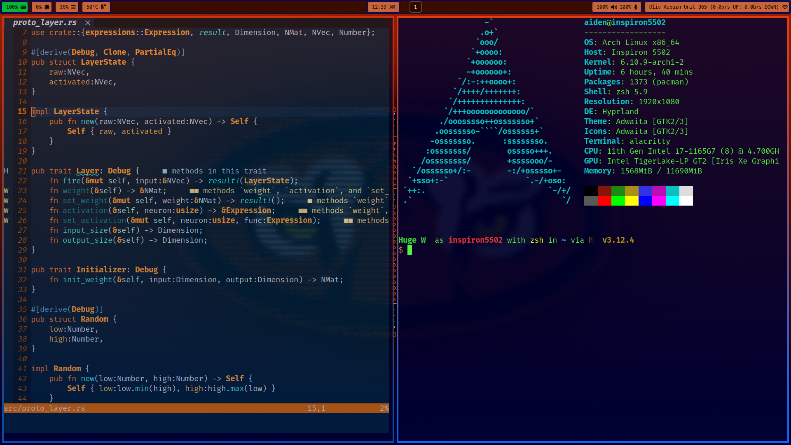

These are some of the things I've worked on for fun in my free time.
(Picture In Computed ASCII Style with Scripted Operations) This is a program I wrote using Rust to take a reference image and generate corresponding ASCII art.
I took the base distribution of Arch Linux and built my own desktop on it using the Hyprland compositor. It is a fully featured desktop, and because I've added everything myself including only what I think I want, there's very little background processing. At any given moment if I'm not actively using the computer, background processes use about half of a percent of my CPU's power.
In high school I did a project to predict changes in the stock market using TensorFlow with python. At an internship after freshman year, I created a similar program to predict which counties were most likely to invest in the companie's product. Given how useful neural networks have been in my life already, I decided to write a neural network library in Rust. It's basic and has no advantage over any existing library, but now I know how to do it.